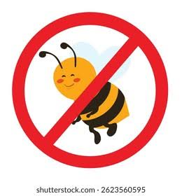

Las buenas prácticas de programación indican las técnicas que le ayudarán a producir programas más claros.

Los tips para prevenir errores contienen sugerencias para exponer errores y eliminarlos de sus programas.
Los errores comunes de programación señalan los errores que cometen los estudiantes con frecuencia.
Las observaciones de ingeniería de software resaltan los asuntos de arquitectura y diseño.